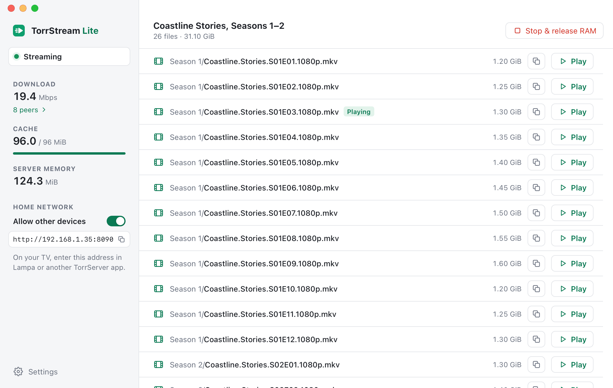

TorrStream Lite
Stream torrents on your Mac or your TV without saving them to disk. A small, fast torrent streaming app that keeps the video in RAM only. For Macs with Apple Silicon.

- Paste a magnet link or a torrent URL, or drop a .torrent file on the window, and play any file right away in VLC or IINA
- Nothing is written to disk: the video goes through a 96 MiB RAM cache, and one click frees it
- Seek anywhere; only the parts you watch are downloaded
- Watch on your TV: Lampa or another TorrServer app on your home network plays from your Mac, on TorrServer's port 8090
- The download speed, cache and every connected peer, live
- Light or dark, following your Mac
TorrStream Lite is free and open source (MIT license). Download the latest version or see the source code on GitHub. If it's useful to you, you can support its development.
TorrStream Lite runs on your computer, with no account, no analytics and no servers of its own. Like any torrent app, it connects to the peers of the torrent you add, and they see your IP address. Read the Privacy Policy for details.
Use TorrStream Lite only for content you have the right to download and watch.
Contact: andeliseev@gmail.com · GitHub · Privacy Policy · Support